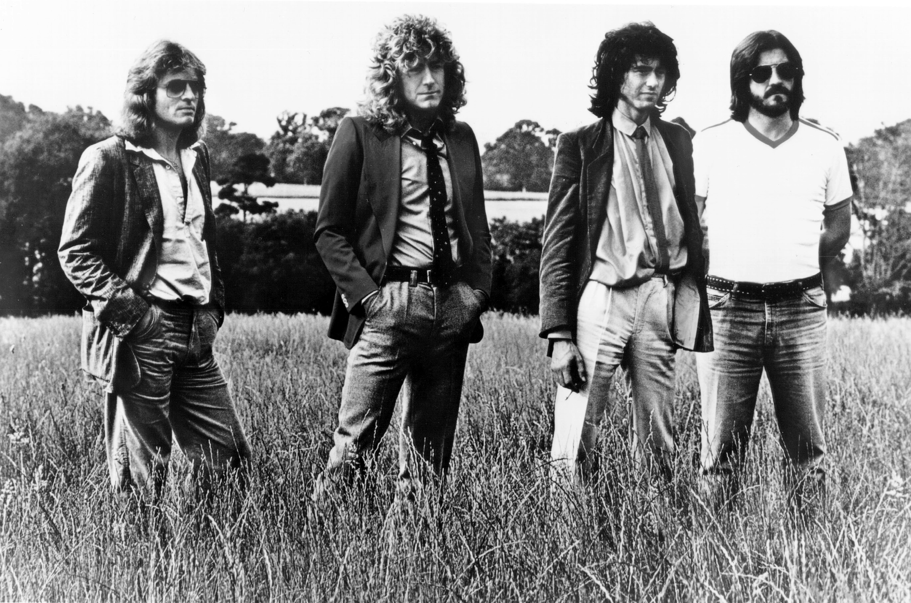

Tagged: 2021
Transcription: “Hey Joe” — Mitch Mitchell with Jimi Hendrix
Posted on March 7, 2021

Yeah, I should probably know better than to talk about “Hey Joe” in the 21st century. But there’s no denying that it’s an incredible song, despite the rather… disturbing lyrics.
There’s actually some interesting speculation online as to why Jimi decided to make his debut single a cover song about a man who murders his wife and tries to hightail it to Mexico. Discussions usually reference Jimi’s turbulent military service (e.g. being conscripted into the Army and basically kicked out of it) as possibly drawing him to a song about violence, betrayal, and freedom. I’ve even found comments about how the background vocals are meant to represent the ghost of Joe’s wife, haunting over him as he tries to cheat the gallows. Read More . . .
“Advanced” Music Theory (For Drummers)
Posted on February 29, 2021

In my Unpopular Opinions post, I brought up my frustration with drummers throwing around “advanced” music theory terms to look cool, without really investigating these terms mean. I said in that post that there was a chance I would write about this in the future, and here we are. I have four topics to discuss: syncopation, polyrhythm, polymeter, and metric modulation. I want to share my understanding of what these terms mean, and I’ll try to address what seems to be the omnipresent confusion regarding them. Read More . . .
Chart: “Chainlink Charge” by Mahito Yokota, Toru Minegishi, Yasuaki Iwata, & Koji Kondo + Practice Loop
Posted on February 21, 2021

This project has a bit of a story behind it.
Todd Bishop over at Cruise Ship Drummer is a big fan of practice loops, which he usually makes himself and shares on YouTube. See what they’re all about on his website.
Meanwhile, about seven(!) years ago I was playing Super Mario 3D World for the first time, and I remember really digging the soundtrack, especially for levels like “Chainlink Charge”. Read More . . .
Unpopular Opinions
Posted on February 7, 2021

So, a few weeks ago, someone on r/drums started a thread basically asking about unpopular drum opinions. I couldn’t help myself, and I left quite a lengthy comment, since I find myself disagreeing with most of what happens on the internet with regards to drumming.
My comment ended up being at the top of the thread, becoming the most popular thing I’ve ever done on the site, with a whopping 29 upvotes. Read More . . .
Transcription: “Hipsterminate” — Richard Kass with Thunkfish
Posted on January 31, 2021

There are deep cuts… and then there’s this. I told you I would be back with something interesting!
Over at r/drumming (a subreddit that’s basically the cooler relative of r/drums) someone asked for help in making sense of a drum solo in the tune “Hipsteriminate” by a band called Thunkfish. Read More . . .
Know Your Tempos — Led Zeppelin
Posted on January 24, 2021
If you’re like me and you’ve ever made the mistake of watching Whiplash, you probably sent your palm through your forehead at the bit where Fletcher points to a metronome marking and tells Andrew to “count me a 215” before he starts going on about “I am to understand that you cannot read tempo?!”. He also calls Andrew a retard, because edgy movie is edgy. If only I knew that the film was just getting started… (more thoughts on that here).
Well, despite the fact that “read tempo” is a phrase that I’ve never heard a real musician use, you can indeed develop a skill like this. Read More . . .
MuseScore 3.6 Released
Posted on January 20, 2021

I wanted to make a short post discussing my notation software of choice, MuseScore, since a somewhat significant update just came out at the end of last week. The MuseScore team calls it an “engraving” release, adding some neat features such as default indenting on scores (which I previously always did with a spacer), in addition to a feature that will organize instruments on a conductor score (using templates such as “Orchestra” or “Jazz Band”). Perhaps most significantly, a new music font was added, “Leland”. Read More . . .
Transcription: “Feeling This” — Travis Barker with Blink-182
Posted on Febuary 17, 2021

Yeah yeah, this song’s been done dozens of times, but I took a shot at it a few years ago and I figured I’d share it. “Feeling This” is often considered a modern day drumming classic — it’s not hard to see why. “Feeling This” is one of the best songs Blink-182 ever did; just listen to the ending vocals in isolation to see the band’s Studio MagicTM at work. Read More . . .
Groove: “Requests” — Makaya McCraven
Posted on January 10, 2021

In the weeks before the 2020 election, I kept seeing these rather hip and sleek ads for the The New York Times. You may know what I’m talking about, have a watch for yourself:
It certainly gets your attention, especially with that music. Read More . . .
Transcription: “The New Year” — Jason McGerr with Death Cab For Cutie
Posted on January 3, 2021

I know we just looked at Jason McGerr back in November, but when else am I gonna share a song called “The New Year”? So then, I have some more Jason McGerr groovage for you. The tune is off of Death Cab for Cutie’s masterpiece Transatlaticism, an album so good even Pitchfork realized they had fucked up when they revisited the LP ten years later, bumping their original score from a 6.4 to an 8.4. Read More . . .
Wrapping Up 2020
Posted on January 1, 2021

Now that the new year is upon us, it’s time to wrap up the last 12 godforsaken months. I can’t say I have very high hopes for 2021, but in the meantime, I guess I should take some inventory.
For one, I graduated college this past May. At long last, I officially have one major, two minors, and a certificate to my name. It was a bummer I didn’t any sort of commencement (not like I really cared), but hey, now I have a diploma. Read More . . .